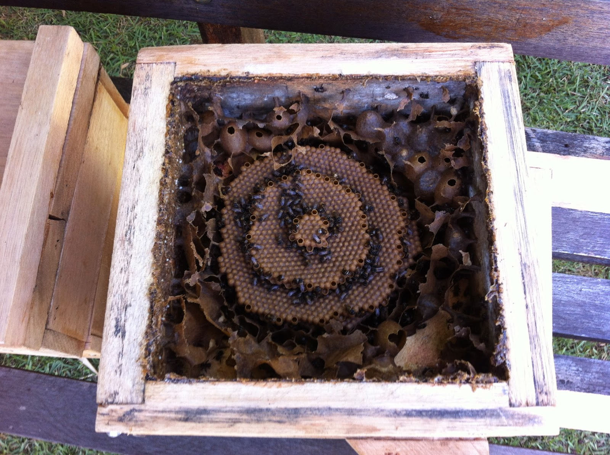
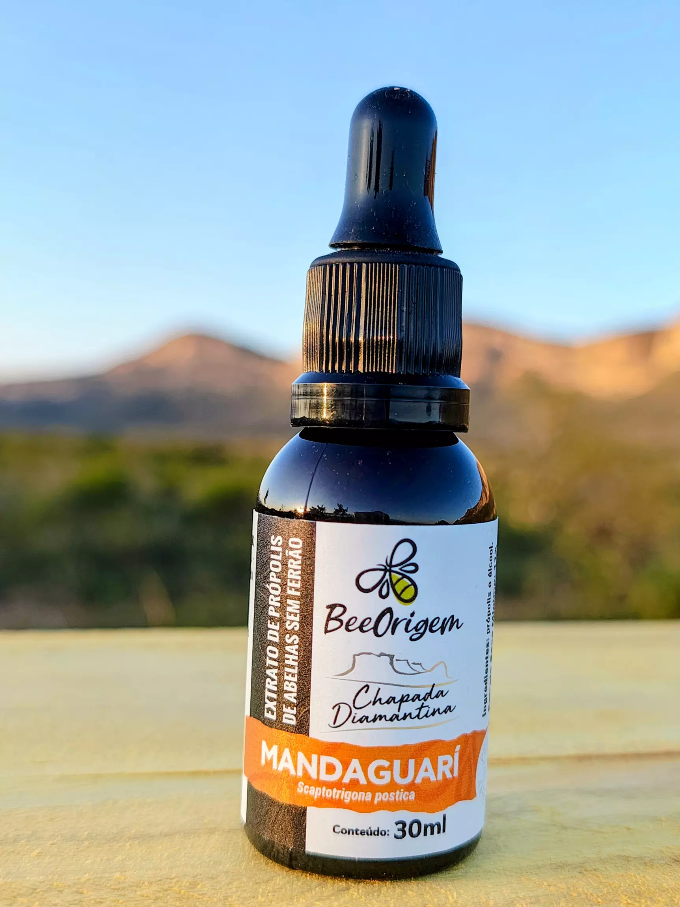

Curiosidades
Nomes populares: Mandaguari,
Abelha sem ferrão,
Abelha indígena,
Jataí (em algumas regiões, embora esse nome também se refira a outras espécies)

Coméia de abelha mandaguari-amarela
Comportamento social: A organização social das colônias, com a divisão de tarefas e o cuidado coletivo das larvas, ajuda a manter a saúde da colônia. As operárias trabalham juntas para limpar e proteger o ninho.
Produtos: Mel: O mel da mandaguari é conhecido por seu sabor distintivo e é frequentemente utilizado
na culinária e na medicina natural. É mais fluido e menos doce do que o mel de abelhas com ferrão.
alem da Própolis, Pólen e da Cera.

Produto feito de própolis (Não patrocinado)
Construção do favo: O favo é construído em forma de estruturas compactas, geralmente em cavidades de árvores ou em troncos. Essas células hexagonais servem para armazenar alimento (pólen e mel) e para o desenvolvimento das larvas.